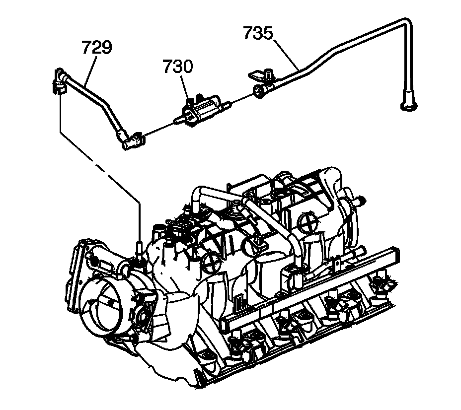

9. Fuel Rail and Injectors Removal
Fuel Rail and Injectors Removal

Caution: Refer to Fuel Rail Stop Bracket Installation Caution.
Important: The intake manifold, throttle body, fuel injection rail and fuel injectors may be removed as an assembly. If not servicing the individual components, remove the intake manifold as a complete assembly.
1. Remove the fuel rail stop bracket and bolt, as required.

2. Remove the evaporative emission (EVAP) canister purge solenoid valve (730) and tubes (729, 735).

3. Remove the fuel rail bolts (511).
Important:
^ Do not separate the fuel injectors from the fuel rail, unless component service is required.
^ Use cleanliness and care when handling the fuel system components.
^ Do not allow dirt or debris to enter the fuel injectors or fuel rail components. Cap ends, as necessary.
Remove the fuel rail (510) with injectors. Lift evenly on both sides of the fuel rail until all the injectors have left their bores.

4. Remove the fuel injector retainers (521) and fuel injectors (533), as required.
5. Remove the O-rings (532, 534) from the injectors, as required.